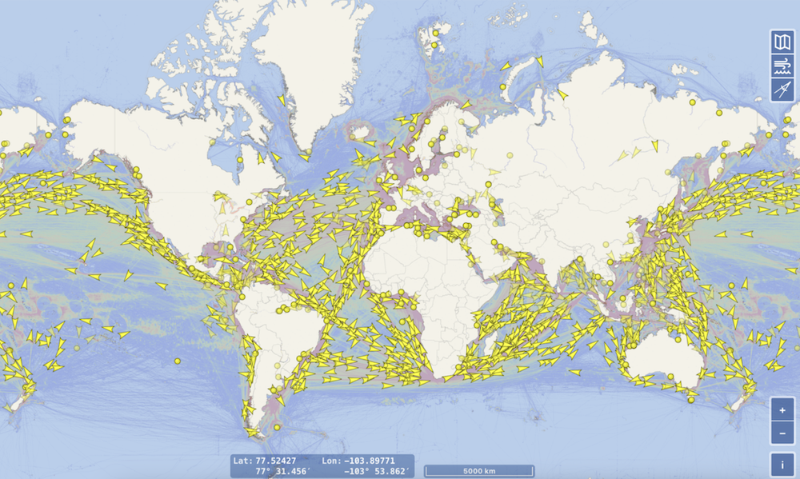
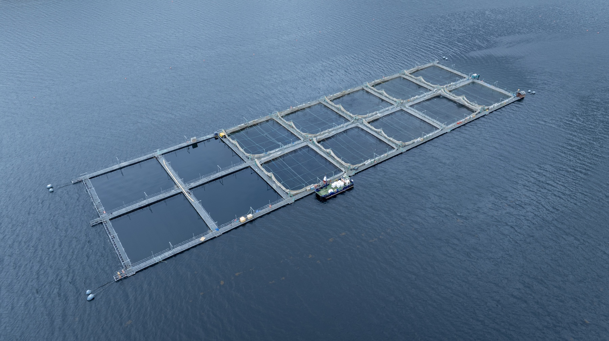
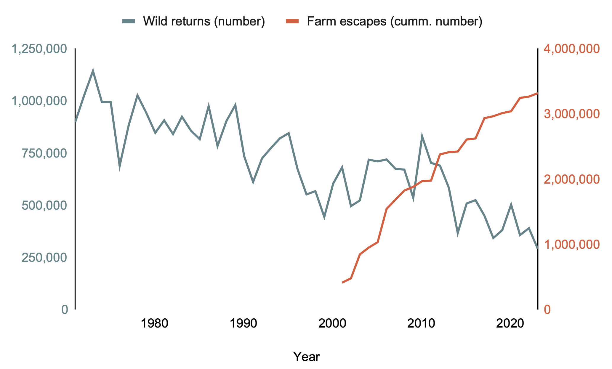
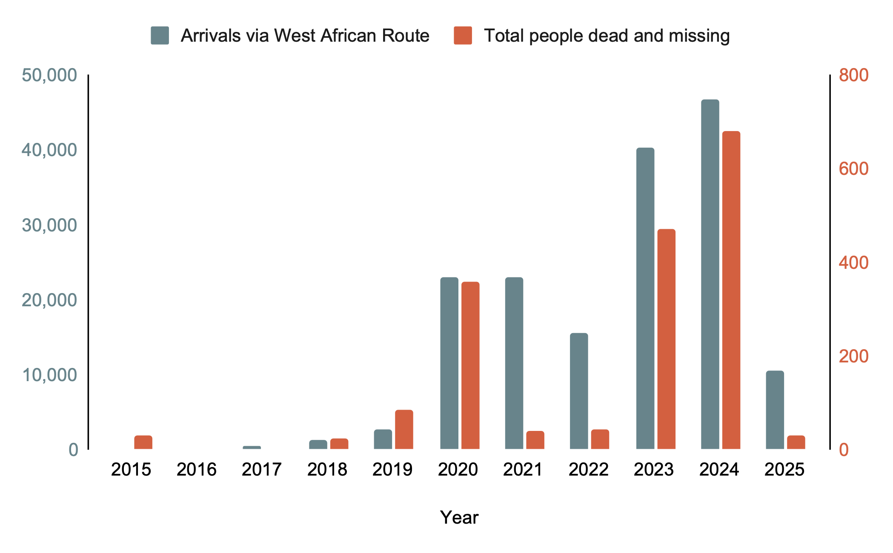
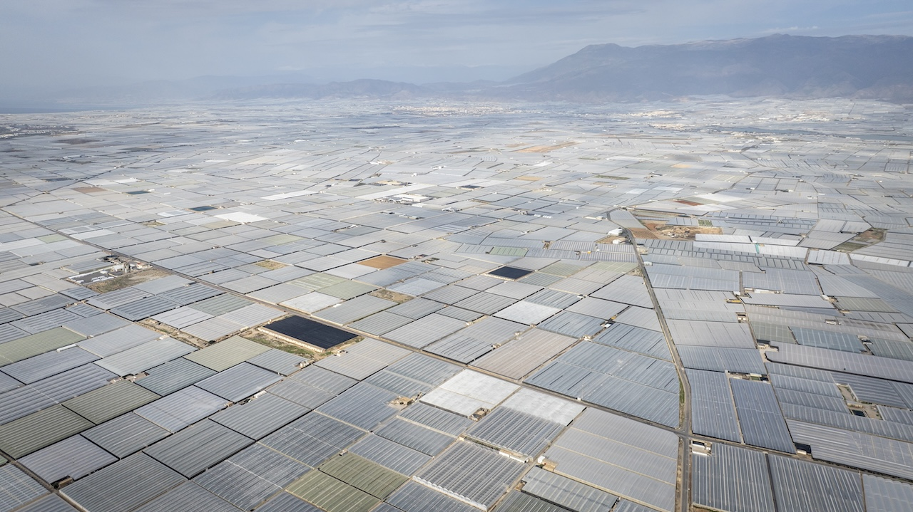
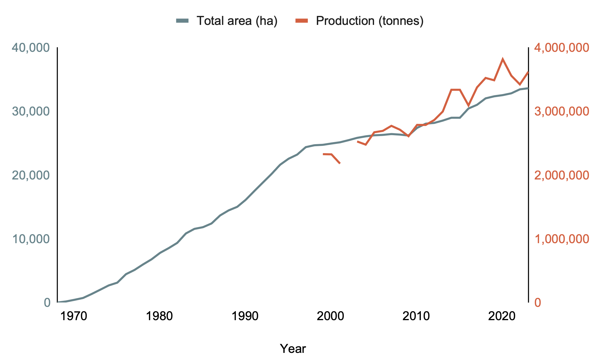
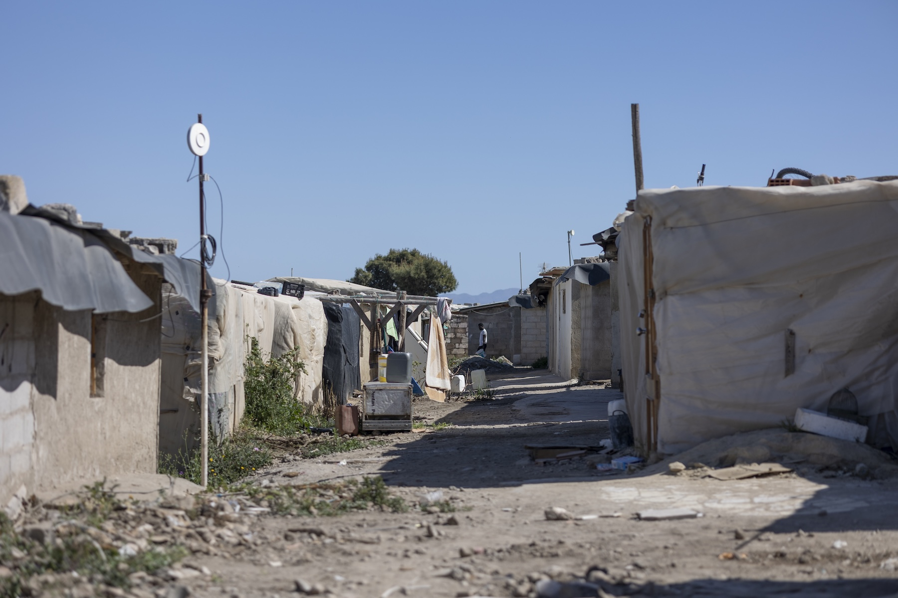

Long read: 25-30 minutes
An intensive greenhouse in Almería's "Sea of Plastic" in Spain
Our food systems in Western Europe are driven by an extreme form of capitalism that relies on colonial exploitation of resources belonging to poorer nations, mostly in the Global South - this is called Food Imperialism. Almost half of the food we eat in the UK is directly imported, increasing to an estimated 80% when imported ingredients are included. The public knows staggeringly little about the conditions in which this food is produced, nor about the social and environmental impacts these production systems have. By focusing in on two food items, salmon and tomatoes, we can clearly see the deeply entrenched problems that each produces, and the surprising catastrophic link between them that is driving migration and environmental destruction.
A Globalised World
The world is more connected today than ever before. More than 12 billion tonnes of produce are moved across the planet in global trade every year - representing almost 9 trillion USD. International trade is now a huge component of the economies of all countries - around 25% of GDP (gross domestic product).
Global cargo vessels (71,469) tracked in the preceding 24 hours at 13:15 15/07/24, showing high-volume vessel regions as hot spots for all vessel types. Data source: https://www.vesselfinder.com/
Agricultural products correspond to around 12% of all traded commodities by weight, and 18% by value. This is a vast share of all food consumed - taking Britain as an example, although the UK Food Security Index claims that 40% of British food is imported (45% of vegetables, 83% of fruit), this figure ignores food produced using imported ingredients. One analyst from HSBC has stated that 80% of British food is at least partially reliant on imported products.
Food Imperialism: the empire strikes back
This dependence allows us to eat fruit and vegetables all year round, irrespective of what is in season. But it also makes us dependent on other economies and legal frameworks on food quality, as well as social and environmental sustainability and responsibility. With less control over what is in our food and how it is produced, the precise nature of our food systems is opaque.
Unscrupulous companies profiteer from this lack of transparency and weaker social and environmental controls, facilitating what some people refer to as ‘food imperialism’ - continued colonial control by the richer Global North over developing states. This can take the form of outright industrial extraction of sovereign states’ resources, but can also involve organisations (like the EU) using their power to establish trade agreements that greatly favour European Union financial interests over those of local people.
In a globalised society where profits are placed above people and environment, this profiteering is ubiquitous. Organisations, like Trase.earth, have been established by researchers to help shine a light in parts of this dark web of trade. Trase uses bills of lading (a receipt provided by a carrier to a shipper to document the transport of goods from one place to another) along with geographical forest cover data to explicitly link trade carriers that ship so-called ‘forest commodities’ (goods like soy and coffee that are produced in areas at risk of deforestation) to the loss of vital forests in South America and Asia. But this work is incredibly expensive and burdensome, and most of our supply chains remain shrouded in mystery.
Two particularly damaging food systems have become vital in turning once luxury items into supermarket staples, and ensuring year-round availability at low cost: salmon and out-of-season fruit and vegetables. These food systems are not unusual - they are merely examples of the kinds of damaging, profit-making food chains that damage social and environmental systems locally and internationally. Their lack of transparency fuels continued unsustainability and threatens the livelihoods of hundreds of thousands of vulnerable people. Understanding this perverse food imperialism will help us design sustainable systems that put people and the planet above profits.
Part 1: The Salmon Rush
A salmon farm in Scotland with feed being restocked
Aquaculture is a major food commodity globally, with 30 million tonnes (148 billion USD) of fish and aquatic resources traded in 2022. The industry has grown 50% since the year 2000, and over 44% of all fish produced are farmed (FAO 2018). Salmon farming is one of the largest individual industries within this burgeoning aquaculture sector. The biggest exporter, Norway, produced 1.2 million tonnes of Atlantic salmon in 2023 - more than doubling from levels in 2005. Scotland produces a modest 200,000 tonnes of salmon by comparison, having grown rapidly in the late 1990s.

Salmon production in Scotland (blue) relative to an increasingly monopolised industry (red). Data source: Scottish Government, Scottish Fish Farm Production Surveys 1980-2023
One of the industry’s trade organisation, Salmon Scotland, claims salmon farming will "increase food security at home and feed the growing global population”, but fails to acknowledge the continued use of edible fish in its fish feed supply chain. According to the environmental campaign charity ‘Feedback’, “the chief business of salmon farming is to take edible food from food insecure places and convert it into a higher value, lower nutrition food in the rich world. It is the business of extraction”. It is also incredibly inefficient - researchers estimate that salmon farming leads to a 90% net loss in calories.
But who is buying all of this salmon? In 2022, France, Poland and Sweden were the biggest importers of salmon, each taking between 237,000 and 249,000 tonnes annually. Sweden’s imports have almost quadrupled in the last 20 years, as it positions itself as a processor of (mostly Norwegian) salmon.

Top importers of salmon (in tonnes) in 2022. Data source: ResourceTrade.earth

Top 18 salmon importers in 2022 and their historical imports. Data source: United Nations Comtrade API, comtradr package
Despite - or rather because of - this financial success, salmon farming is plagued by controversy, from local environmental damage and animal welfare concerns, to broad social impacts of its overseas feed supply chains. In prioritising profits over social and environmental responsibility, the salmon farming industry is the cause of considerable, wide-reaching harms.
In salmon farming, fish are raised in hatcheries before being released into open pens that float close to shore in protected sea bays, lochs and inlets. Typically, feed barges supply the pens with pelleted feed automatically, with human intervention only necessary for veterinary interventions and harvest. In practice, excessive mortality rates caused by lice infestations and disease mean that veterinary interventions (such as delicing) and administering antibiotics are common. With a mean mortality rate of around 14.5% per year, salmon farming in Scotland also involves considerable time removing dead, dying and rotting fish corpses from these farms.
Vast numbers of escaped salmon compete and breed with wild salmon, adding pressures to dwindling populations. Data source: Marine Directorate, Scottish Government
An expanding body of research shows that the local impacts caused by salmon farming include: habitat loss (Stickney & McVey 2002); damage to benthic (sea bed) ecosystems (e.g. Dauvinet al. 2020, Larocheet al. 2022); pollution from salmon defecation, excess feed, and chemical use (e.g. Tett 2008); overuse of antibiotics and antibiotic resistance (Gazal et al. 2020); escapes and genetic interaction of non-native species with wild fish populations (Svasandet al. 2007; Chevassus-au-Louis & Lazard 2009; Lazard & Lévêque 2009); disease transmission to wild fish species (Salama and Rabe 2013); and mass mortalities and substandard animal welfare (Størkersenet al. 2021).
But the negative impacts of salmon farming do not stop there. The production of salmon requires large amounts of feed - one estimate in the peer-reviewed scientific literature states that 2.8kg of feed is needed for each 1 kg of salmon (Ellingsen and Aanondsen 2006), although this ratio (fish in: fish out) is hotly debated (Koket al. 2020), and strongly refuted by the industry (Aquaculture Stewardship Council 2021). Irrespective of the precise values of the volume needed, the industry continues to require wild fish as a core component of salmon feed. A report by the campaign organisation Feedback (2024) states that 2.5% of all global marine fish caught are used to feed the Norwegian salmon farming industry. At the time of publication of this report, it appears that most of this demand for wild fish has been met by stocks in West Africa.
When international trade regulations are enforced they are applied selectively. Warnings are given to countries with which the EU has significant trade agreements, with outright fishing bans only levied towards lesser trade partners. A study from 2020 showed that over five years, EU trade with “red-carded” countries came to 491 million USD, whilst it was 79.8 billion USD for yellow-carded countries. Continued trade in fish is not the only benefit the EU seeks.
Part 2: Outsourced Impacts
All along the coast of Mauritania, Senegal, and The Gambia, foreign-owned factories are appearing that are turning small pelagic fish into fish meal and fish oil. According to some, 90% of these fish are edible - and in The Gambia, over 80% of people rely on such fish for vital protein. As foreign states increasingly over-extract fish from the waters along Africa’s west coast, fishery stocks are declining, and prices have been driven up. As a result, artisanal fishers desperate for money are forced to sell their catches to these factories, instead of local markets for human consumption. Since fishing is a predominantly male activity here and women typically run local fish processing (including salting the fish) and markets, the shift in sales towards the fishmeal industry has disproportionately affected women. An FAO report found that one species (the bonga) increased in price four-fold as a result of competition with fishmeal factories in The Gambia, resulting in fish processors losing their jobs and income. In The Gambia alone, fishmeal production jumped from 67 tonnes in 2015 to 3,200 tonnes by 2020, although this is likely a substantial underestimate due to underreporting. An investigation by DeSmog found that this required processing of around 16,600 tonnes of fresh fish in 2018 - a third of The Gambia’s annual catch. By 2020, Norway was importing over 23,000 tonnes of fish from Mauritania, but trade data are difficult to interpret because fish are often not landed in Africa, with vessels now capable of processing fish into fishmeal at sea.

Mauritanian fish oil exports in 2022. Data source: ResourceTrade.earth
However, these changes have caused a substantial backlash in West African fishing communities. In the Senegalese fishing town of Cayar, local fishermen are suing one of the new fishmeal factories because of the scale of environmental damage caused by fish processing. In 2017, a Gambian fish factory in the village of Gonjur released phosphorus into a lagoon, killing vast quantities of fish within the wildlife reserve. Local people have also complained about the smell and its effects on quality of life and tourism. Campaigns in Senegal have secured a commitment from the government to stop granting new fishing licences, with 52 new foreign fishing licences rejected in 2020, but non-transparent licensing processes mean illegal fishing continues.
Both non-governmental and intergovernmental organisations agree - fishing industries within Western food and feed supply chains should be regulated to ensure sustainability. The NGO Amnesty stated there is aneed to “regulate the fish-based feed industry to limit the use of fishmeal and fish oil (FMFO) made from fish that are already overexploited and increase transparency”. Meanwhile, the EU’s Common Fisheries Policy, which was introduced in 1983, aimed at protecting wild fish stocks, with 2013 updates to the policy including third countries’ sustainability where EU fleets operate. According to the Coalition for Fair Fisheries Arrangements, the EU fleets are working around restrictions and targeting depleted fisheries in West Africa “through private licensing, chartering, joint venture agreements and high seas fishing”, including reflagging vessels.
Part 3: Moving People
In 2022, 5.1 million people from outside of the EU migrated to an EU member state to live, with 9.93 million non-EU citizens working in the EU labour force (some 5.1% of the total labour market). Immigration is vital for the EU economy, since the population would otherwise fall by c. 500,000 per year. The unregulated employment of undocumented migrants through a ‘blackmarket’ therefore represents an important means of sustenance for many people arriving in Europe, and is seen as a vital source of hope for many people in West Africa affected by the loss of artisanal fisheries.
However, along with legal (or ‘regular’) routes of entering the EU, large numbers of people arrive here through irregular (referred to as ‘illegal’) routes. In the first 11 months of 2023, the Institute of Migration recorded over 260,000 undocumented migrants entering Europe by land and sea routes, up significantly from 190,000 in 2022 and 150,000 in 2021.
People migrating to Europe from West Africa via The Canary Islands in small boats, including totals missing and dead along the route. Data sources: UNHCR and Missing Migrants Project
According to Spanish Ministry of the Interior data, across all of its borders, Spain received 56,852 irregular migrants by land and sea in 2023, with 39,910 of these arriving in the Canary Islands. These islands sit just over 100 km from the African coast - tantalisingly close, but a potentially fatal crossing. In the first 3 months of 2024, 13,115 people arrived via this route, and at the same time, 119 people died or went missing in 12 known shipwrecks along the African coast - a recent report suggests the number of people who have died on this route could be close to 10,000.
It is unclear where in the EU people who arrive in Spain through irregular migration finally end up. Because of their undocumented status, however, they are highly likely to seek out places with a lower chance of arrest and deportation, particularly as deportation rates increase, and where informal employment is feasible. Spain is not only the first country of arrival for migrants via the West African Atlantic Route and Western Mediterranean Routes, it is favourable in terms of safe employment and settlement opportunities. Spain previously provided an amnesty for undocumented migrants to obtain residency in 2005, and looks set to repeat the measures.
As a result of illegality and uncertainty, undocumented migrants are still currently forced into precarious and often dangerous jobs, paid poorly with no guarantee of work, and live in unsanitary and unsafe informal settlements. These people typically end up working in highly exploitative sectors, including tourism and agriculture, in order to send money home to support their families they left behind.
Part 4: Agricultural Exploitation
Over 32,000 hectares of plastic covered greenhouses make up Almería’s ‘Sea of Plastic’ in southern Spain
Spain produces a large proportion of the European demand for fresh fruit and vegetables. In 2021, the Andalusian province of Almería produced almost 1 million tonnes of cucumbers, more than 700,000 tonnes of tomatoes, and a total of 3.8 million tonnes of all fruit and vegetables. Of this, some 2.9 million Euro was exported to other countries. Around 25% of the peppers imported into the UK are grown in Almería, and Spain is the single largest source of all fresh fruit and vegetables brought into the UK. These fruits and vegetables are grown in the largest concentration of greenhouses on earth - more than 32,000 hectares. Almería alone is responsible for around 38% of the horticultural production in Spain, with 80% of crops destined to be exported.

Spanish tomato exports in 2022. Data source: ResourceTrade.earth
The area of greenhouses in Almería increased by 20% between 2012 and 2019. In 2023 and 2024, although greenhouses area grew by only 0.6%, productivity increased substantially - up 22% to a total of 3.82 million tonnes. But as export demand for off-season, low-cost fruit and vegetables increases, so do the impacts of these purchasing habits. The high productivity of this artificial agricultural system is only possible through the exploitation of environmental and social resources, and the negative social-ecological impacts here have been reported for decades.
Greenhouse area and production in Almería. Data source: Análisis de la campaña hortofrutícola de Almería. 2001-2024, Cajamar
The continued growth of greenhouses here encroaches on protected areas and native scrubland, threatening Almería’s high biodiversity. In El Ejido, the heartland of the greenhouse industry, one of the most strictly protected wetlands lies only a fewpaces away from densely packed greenhouses. This intensive agriculture requires enormous volumes of water for irrigation - 80% of the water needed for the greenhouses comes from deep underground. Overexploitation of these aquifers along with the extensive use of pesticides and fertilisers has resulted in intense pollution (between 20 and 50% of the fertiliser used here leaches down into the water table). These aquifers once supplied the region’s drinking water, but decades of pollution has meant that the water is now undrinkable.
The region is known colloquially as the ‘sea of plastic’ because of the massive amounts of plastic sheeting used to cover the greenhouses. Around 34,000 tonnes of plastic is thrown away every year as it breaks down in the intense sunlight and gets damaged. Much of this is dumped illegally, blocking rivers or eaten by wildlife, including the famous case of a sperm whale that died after ingesting 17 kg of plastic, mostly from the greenhouses.
But as well as exploiting the environment, this agricultural system depends upon exploiting a vulnerable labour force. An estimated 120,000 people are employed in the greenhouses, with the majority employed illegally because of their undocumented status. These jobs are unpredictable, dangerous, and offer very low wages with no contracts - migrant workers are typically paid 50-70% of the national minimum wage.

Greenhouse workers by immigration status. Data source: Análisis de la campaña hortofrutícola de Almería. 2001-2024, Cajamar
Many farmers make little profit, under continuous pressure to increase the production of fresh fruit and vegetables in a highly competitive market with low wholesale prices - for example, they typically receive only 12% of the final supermarket selling price for cucumbers. As a result, many farmers are going out of business. It is not hard to understand why they often employ undocumented labourers willing to take low wages.
The migrants working in the greenhouses are often forced to live in unsanitary living conditions - slum housing known as ‘chabolas’ - without access to clean water and safe electricity, and often with poorly stored cooking gas, commonly resulting in fires. Some of these settlements have been bulldozed and destroyed by local authorities in order to remove them from public view. The uncertainty and stress of these living conditions has resulted in a number of social issues like alcoholism and depression. Some migrants are unable to work because of health issues. In one settlement near the town of Níjar, people unable to work often live together. They have little to do during the day other than wander the streets whilst others work. Some of these migrants are now also trapped - their embassies refusing to support their repatriation or facilitate the paperwork they need to obtain legal residency.
Many migrant labourers are forced to live in informal settlements
The nature of the work within the greenhouses also comes with significant health risks. One study found that 37% of Almería greenhouse crop sprayers had elevated rates of spontaneous abortion, mental health issues including depression, and neurologic disorders like headache, tremors and paraesthesia (skin burning or prickling). It has been claimed that growers are increasingly switching to organic farming and integrated pest management, but it is not just agrichemical exposure that can cause harm - summer temperatures in the greenhouses can become unbearable, technically classed as “dangerous to human health” in recent years.
Part 5: Alternatives
Whilst an increasing number of other countries are expanding greenhouse production - Morocco supplies 68% of France’s tomatoes, for example - they either experience similar social impacts or, like the Netherlands, the energy requirement and carbon footprint are much higher, and costs per kilo are around double that of Spain. In all cases, it is the exploitation and constant drive for excessive profits that causes social-ecological harm.
Similarly, as the majority of salmon is exported to wealthy nations and can be regarded largely as a luxury good, alternative food sources could be sourced that had lower social and ecological impacts. And yet there is a lack of responsibility taken by importers for its food supply chains. Farming in Almería accounts for 40% of its GDP, with ownership relatively broad as 95% of farms are owned by almost 15,000 families. Importing countries have a significant impact on the labour force of the region. For example, Germany’s tomato imports alone are responsible for 0.2% of total Spanish farm labour.
Although alternative feed sources for salmon have been reported, for example insects that can be reared in closed, land-based systems. However, these have so far contributed in significantly to the large quantities of feed needed across the industry - just 0.4% in Norway. Perhaps this is in part due to regulatory resistance and fears about contamination, prohibitive costs, or perceived unsuitability. Whatever the reason, sustainable, non-fish-based salmon feed is a long way off.
Climate change will increasingly make our world less stable, increasing risks to food production as a result of drought, flooding, frost, and novel pests and diseases. This will affect importing nations’ food resilience. At the same time, there will continue to be arise in the demand for fresh fruit and vegetables, more diverse diets, increasing luxury goods like salmon, and a greater volume of off-season produce.
Climate change and increasing levels of mortality in salmon aquaculture may spell the end for financial viability of salmon farming. Alternatively, legislators may follow the example of British Columbia in banning salmon farming as a result of its catastrophic environmental impacts. Simultaneously, countries are increasingly seeking food security and control of their carbon emissions by investing in their own greenhouse agriculture, for example Sweden.
Part 6: Viable Solutions
One of neoliberalism’s enduring myths is that consumer choice functions as a form of democratic power - that by selecting ethically branded or ‘sustainable’ products, individuals can drive meaningful system change. But this logic has been widely discredited. While coordinated consumer actioncan exert some pressure, shifting individual purchasing habits alone is a weak lever for transforming entrenched economic and political systems. In a marketplace saturated with competing calls on our conscience - from carbon footprints to plastic packaging, organic certification to Fairtrade labels - the impact of ethical consumption is diffuse, fragmented, and often co-opted by the very systems it seeks to reform. There is also a strong ‘attitude-behaviour gap’, sometimes referred to as cognitive dissonance, whereby what we know and how we behave are misaligned - despite knowing about a problem, we may still be constrained in our consumption habits by things like cost, availability, and convenience.
Supermarkets often claim that consumers ‘demand’ winter fruitand vegetables, low-cost options, and stable prices, but is this true? Until the mid-1980s, British consumers consistently paid 2-3 times the autumn price for tomatoes during the early spring - since 2010, prices barely fluctuate across the year. Luxuries have become staples.

Average tomato prices (GBP per kilo). Data source: UK Office for National Statistics; Consumer price inflation time series (MM23)
This is what happens when food is sold as a commodity in a market designed to be as competitive as possible. The quality and nutritional value of food, and its social and environmental sustainability become secondary priorities to profit.
Around the world, a growing number of organisations and movements is challenging the structures of food imperialism. Central to this resistance is the food sovereignty movement, spearheaded by La Vía Campesina, which unites small-scale farmers, indigenous communities, and rural workers in a global effort to reclaim regional control over food systems. Events like the Nyéléni Forum providevital international platforms for developing collective strategies, uniting grassroots actors from across the world. Indigenous-led initiatives such as the Sogorea Te’ Land Trust and Zapatista communities offer tangible examples of resistance through land rematriation and the revival of traditional food pathways, emphasising the inseparability of land, culture, and sustenance.
Agroecological and solidarity-based alternatives are also gaining ground, challenging the extractive nature of industrial agriculture. Initiatives like Alvelal in Spain, Navdanya in India and Agroecology Europe promote farming systems rooted in biodiversity, community knowledge, and seed sovereignty. In parallel, alternative food networks provide decentralised, democratic models of food production and distribution that intentionally bypass corporate control. These efforts are supported by legal and political advocacy organisations such as FIAN International and the International Planning Committee for Food Sovereignty, which aim to defend food as a human right and amplify peasant voices in global governance spaces. Meanwhile, educational and cultural resistance - from seed libraries and heritage food preservation to critical media like The Ants and the Grasshopper film - play a crucial role in shifting public narratives and revaluing diverse, locally rooted food traditions. Together, these movements form a multifaceted response to food imperialism, aiming not just to reform, but to transform food systems.
Individual actions are likely not to have the power to drive thelevel of systemic change needed to remove imperialism from our food systems. That power and responsibility lies with those profiteering from the exploitation inherent within them, and the governments that permit their actions. However, grassroots organisations are working to hold them to account and provide alternative solutions. Our responsibility, as consumers, lies in supporting these organisations and closing our attitude-behaviour gap - perhaps not to expect the latter to drive change, but at least to live according to our moral compass.
Conclusions
Food Imperialism - the outsourcing of food production to poorer nations that deal with the resultant social and environmental impacts - exists across most of our food supply chains, but perhaps none more clearly than the story of The Salmon and the Tomato. It is corporate greed - treating food as a means of generating profit - that is the root cause. Big corporations maximise their profits by using scale to ensure very small margins on their sales oust their competitors from the market. This drive to the bottom, pricewise, passes on costs to food and feed producers, who are then given little choice but to exploit the nature and people at their disposal. Meanwhile, these activities are passed off as ‘increasing efficiency’, ‘growing economies’ and ‘giving customers what they want’.
Evidence exists that demonstrates a linkage between the salmon farming industry in Northern Europe and overexploitation of fisheries in West Africa.Evidence also shows that people from these countries migrate to Europe and end upworking in exploitative industries, including the greenhouse agriculture in Almería, where they work and live in precarious, dangerous, and unhealthy conditions.
It is difficult to foresee a future for intensive food production systems that does not involve some form of social or environmental exploitation, since the primary purpose of this industry is profit generation. The neoliberalist prerogative of shareholder profiteering drives exploitation of finite resources - whether human or environmental. We must embrace food production systems that centre on social and environmental sustainability, perhaps starting with an institutional and cultural responsibility for the systems that feel the brunt of our continued exploitation.
Our global food system is not broken, it is functioning exactly as designed: to serve profit over people. But those designs can be rewritten.
Much can change if we shift our gaze from viewing food as commodity to appreciating food as a relationship: one that is grounded in sovereignty, self-determination, and commensality. These values havelong existed outside imperial supply chains, sustained by communities who resist exploitation.
This is not about perfection, but direction. It is about aligning action with our collective moral compass, and solidarity with those people stuck in a damaging system created by our society.
What changes might we need to support food sovereignty in West Africa? How might we ensure marine environments here are preserved and fish populations sustained? We must take back control of the food we eat and how it is made, reshaping the world free from Imperial, profit-centred influence.
An automated salmon farm in a loch in Scotland